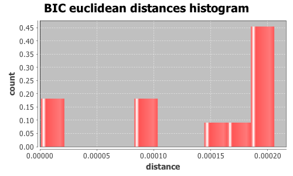

Application Meta
jModeltest 2.1
(c) 2011-onwards D. Darriba, G.L. Taboada, R. Doallo and D. Posada,(1) Department of Biochemistry, Genetics and Immunology
University of Vigo, 36310 Vigo, Spain.
(2) Department of Electronics and Systems
University of A Coruna, 15071 A Coruna, Spain.
e-mail: ddarriba@udc.es, dposada@uvigo.es
Wed Nov 16 20:39:31 CET 2016
Mac OS X 10.12, arch: x86_64, bits: 64, numcores: 4
| Citation: | Darriba D, Taboada GL, Doallo R and Posada D. 2012. "jModelTest 2: more models, new heuristics and parallel computing". Nature Methods 9, 772. |
 Back to top
Back to top Settings
Arguments = -d results/topaza_allele_alignments_selections/random_150/uce-7884_phased.nexus -i -g 4 -s 3 -BICInput Alignment: "results/topaza_allele_alignments_selections/random_150/uce-7884_phased.nexus"
NumTaxa = 20
Length = 927
Phyml version = 3.0
Phyml binary = PhyML_3.0_macOS_i386
Candidate models = 12
number of substitution schemes = 3
including only models with equal base frequencies
including models with/without a proportion of invariable sites (+I)
including models with/without rate variation among sites (+G) (nCat = 4)
Optimized free parameters (K) = Substitution parameters + 37 branch lengths + topology
Base tree for likelihood calculations = Maximum Likelihood
Tree topology search operation = Best of {NNI, SPR}
Model Optimization Results
| ID | Name | Partition | -lnL | p | fA | fC | fG | fT | ti/tv | R(a) | R(b) | R(c) | R(d) | R(e) | R(f) | p-inv | shape |
|---|---|---|---|---|---|---|---|---|---|---|---|---|---|---|---|---|---|
| 1 | JC | 000000 | 1419.5241 | 38 | - | - | - | - | - | - | - | - | - | - | - | - | - |
| 2 | JC+I | 000000 | 1419.5430 | 39 | - | - | - | - | - | - | - | - | - | - | - | 0.1320 | - |
| 3 | JC+G | 000000 | 1419.5246 | 39 | - | - | - | - | - | - | - | - | - | - | - | - | 59.6450 |
| 4 | JC+I+G | 000000 | 1419.5483 | 40 | - | - | - | - | - | - | - | - | - | - | - | 0.1690 | 99.8320 |
| 5 | K80 | 010010 | 1416.6889 | 39 | - | - | - | - | 1.6687 | - | - | - | - | - | - | - | - |
| 6 | K80+I | 010010 | 1416.6995 | 40 | - | - | - | - | 1.6691 | - | - | - | - | - | - | 0.0800 | - |
| 7 | K80+G | 010010 | 1416.6906 | 40 | - | - | - | - | 1.6692 | - | - | - | - | - | - | - | 59.6450 |
| 8 | K80+I+G | 010010 | 1416.6900 | 41 | - | - | - | - | 1.6690 | - | - | - | - | - | - | 0.0000 | 99.8320 |
| 9 | SYM | 012345 | 1414.0482 | 43 | - | - | - | - | - | 1.1135 | 2.0247 | 0.0015 | 1.4397 | 3.3130 | 1.0000 | - | - |
| 10 | SYM+I | 012345 | 1414.0481 | 44 | - | - | - | - | - | 1.1113 | 2.0231 | 0.0015 | 1.4381 | 3.3082 | 1.0000 | 0.0000 | - |
| 11 | SYM+G | 012345 | 1414.0499 | 44 | - | - | - | - | - | 1.1097 | 2.0184 | 0.0015 | 1.4356 | 3.3044 | 1.0000 | - | 66.1960 |
| 12 | SYM+I+G | 012345 | 1414.0491 | 45 | - | - | - | - | - | 1.1106 | 2.0219 | 0.0015 | 1.4374 | 3.3088 | 1.0000 | 0.0000 | 99.8320 |
There are 7 different topologies. The following table shows the models supporting each topology and the rank according to each Information Criterion, as well as Robinson-Foulds and Euclidean distances with the tree of the best-fit model.
| ID | Models | Topology | AIC | BIC | AICc | DT | |
|---|---|---|---|---|---|---|---|
| 0 |
JC JC+G K80 K80+G
|
RANK | - | 0 | - | - | |
| Weight | - | 0.9687 | - | - | |||
| RF | - | 0 | - | - | |||
| AVG Distance | - | 1.6215e-03 | - | - | |||
| Distance VAR | - | 7.6574e-06 | - | - | |||
| 1 |
SYM SYM+G
|
RANK | - | 1 | - | - | |
| Weight | - | 0.0000 | - | - | |||
| RF | - | 6 | - | - | |||
| AVG Distance | - | 3.3331e-03 | - | - | |||
| Distance VAR | - | 7.4066e-15 | - | - | |||
| 2 |
SYM+I
|
RANK | - | 2 | - | - | |
| Weight | - | 0.0000 | - | - | |||
| RF | - | 16 | - | - | |||
| AVG Distance | - | 5.3196e-03 | - | - | |||
| Distance VAR | - | 0.0000e+00 | - | - | |||
| 3 |
JC+I
|
RANK | - | 3 | - | - | |
| Weight | - | 0.0194 | - | - | |||
| RF | - | 18 | - | - | |||
| AVG Distance | - | 5.6264e-03 | - | - | |||
| Distance VAR | - | 0.0000e+00 | - | - | |||
| 4 |
JC+I+G SYM+I+G
|
RANK | - | 4 | - | - | |
| Weight | - | 0.0006 | - | - | |||
| RF | - | 24 | - | - | |||
| AVG Distance | - | 6.9158e-03 | - | - | |||
| Distance VAR | - | 6.2658e-09 | - | - | |||
| 5 |
K80+I
|
RANK | - | 5 | - | - | |
| Weight | - | 0.0109 | - | - | |||
| RF | - | 24 | - | - | |||
| AVG Distance | - | 6.4139e-03 | - | - | |||
| Distance VAR | - | 0.0000e+00 | - | - | |||
| 6 |
K80+I+G
|
RANK | - | 6 | - | - | |
| Weight | - | 0.0004 | - | - | |||
| RF | - | 24 | - | - | |||
| AVG Distance | - | 6.8106e-03 | - | - | |||
| Distance VAR | - | 0.0000e+00 | - | - |
BIC Selection Results
Model selected
| Model | JC | ||
|---|---|---|---|
| partition | 000000 | ||
| -lnL | 1419.5241 | ||
| K | 38 | ||
| freqA | - | R(a) | - |
| freqC | - | R(b) | - |
| freqG | - | R(c) | - |
| freqT | - | R(d) | - |
| ti/tv | - | R(e) | - |
| R(f) | - | ||
| p-inv | - | gamma | - |
Best model tree
(Florisuga_0:0.00137859,Florisuga_1:0.00000001,(T_pella7_1:0.00000015,(T_pella9_1:0.00119414,((((T_pyra4_1:0.00107946,T_pella5_1:0.00000001):0.00000001,(T_pyra3_0:0.00000001,(T_pyra1_1:0.00000001,(T_pyra4_0:0.00000011,(T_pyra3_1:0.00228399,(T_pyra1_0:0.00000001,T_pella5_0:0.00268212):0.00000001):0.00000067):0.00000001):0.00000001):0.00000009):0.00000013,T_pyra2_1:0.00000019):0.00216043,(T_pella6_1:0.00108537,(((T_pella8_1:0.00000001,T_pella8_0:0.00000001):0.00000007,(T_pella9_0:0.00000001,T_pella7_0:0.00000014):0.00000001):0.00107573,(T_pella6_0:0.00000023,T_pyra2_0:0.00000020):0.00000010):0.00107944):0.00000020):0.00107925):0.00000010):0.00337473);
Display best model tree in PhyloWidget
| Model | -lnL | K | BIC | delta | weight | cumWeight |
|---|---|---|---|---|---|---|
| JC | 1419.5241 | 38 | 3098.6625 | 0.0000 | 0.6014 | 0.6014 |
| K80 | 1416.6889 | 39 | 3099.8240 | 1.1615 | 0.3365 | 0.9379 |
| JC+G | 1419.5246 | 39 | 3105.4954 | 6.8329 | 0.0197 | 0.9576 |
| JC+I | 1419.5430 | 39 | 3105.5321 | 6.8697 | 0.0194 | 0.9770 |
| K80+G | 1416.6906 | 40 | 3106.6593 | 7.9968 | 0.0110 | 0.9881 |
| K80+I | 1416.6995 | 40 | 3106.6772 | 8.0147 | 0.0109 | 0.9990 |
| JC+I+G | 1419.5483 | 40 | 3112.3748 | 13.7123 | 0.0006 | 0.9996 |
| K80+I+G | 1416.6900 | 41 | 3113.4900 | 14.8275 | 0.0004 | 1.0000 |
| SYM | 1414.0482 | 43 | 3121.8703 | 23.2078 | 0.0000 | 1.0000 |
| SYM+I | 1414.0481 | 44 | 3128.7022 | 30.0397 | 0.0000 | 1.0000 |
| SYM+G | 1414.0499 | 44 | 3128.7058 | 30.0433 | 0.0000 | 1.0000 |
| SYM+I+G | 1414.0491 | 45 | 3135.5361 | 36.8736 | 0.0000 | 1.0000 |
| -lnL: | negative log likelihod |
| K: | number of estimated parameters |
| BIC: | Bayesian Information Criterion |
| delta: | BIC difference |
| weight: | BIC weight |
| cumWeight: | cumulative BIC weight |
Confidence interval
There are 12 models in the 100.00% confidence interval:
JC K80 JC+G JC+I K80+G K80+I JC+I+G K80+I+G SYM SYM+I SYM+G SYM+I+G

Euclidean distances histogram from each model optimized tree to JC tree.
Euclidean distances histogram from each model optimized tree to JC tree.